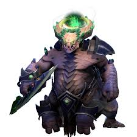
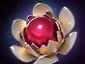
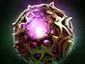

Firestorm
обстреливает область огненными волнами, нанося урон.

Хардлайн — позиция 3
контролировать область боя, мешать врагам наносить урон, защищать башни и помогать команде перемещаться по карте.
Firestorm быстро очищает волны крипов и лагеря. Не стой без дела: продавливай линии и помогай союзникам.
обстреливает область огненными волнами, нанося урон.
создаёт яму, которая периодически обездвиживает врагов.
ослабляет атаки врагов и даёт Underlord бонус к урону после гибели вражеских героев рядом.
переносит Underlord и союзников к выбранному союзному строению или существу в соответствии с правилами способности; полезен для спасения и быстрого перемещения.



